图6． 插入OPC Server
3. 添加组件窗口中选择IE General
硬件：
① S7 1200 CPU
② PC （带普通以太网卡）
③ TP线
软件：
① STEP 7 Basic V10.5
② STEP 7 V5.4
③ SIMATIC NET V7.1
1. 在STEP7 中新建项目,组态PC Station。
打开STEP7并新建一个项目：“S7-1200_OPC”,通过“Insert”>“Station”>“SIMATIC PC Station”插入一个PC站,PC站的名字为：“SIMATIC PC Station(1)”。如图1所示。
注意：STEP7 中PC Station的名字“SIMATIC PC Station(1)”要与SIMATIC NET 中“Station Configuration Editor”的“Station Name”完全一致,才能保证下载成功。
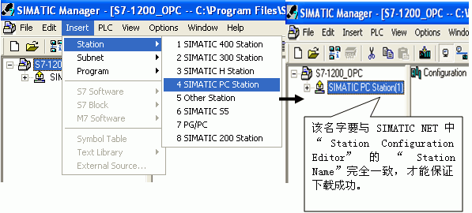
图1．插入并组态PC 站
2. 双击Configuration即可进入PC Station硬件组态界面。
在第一个槽中,从“SIMATIC PC Station”>“User Application”>“OPC Server”下,选择版本“SW V6.2 SP1”添加一个OPC Sever 的应用。
在第三个槽中,从“SIMATIC PC Station” >“CP Industrial Ethernet”>“IE General”下,选择版本“SW V6.2 SP1”添加一个 IE General,并设置IP 地址,如图2所示。
注意：因为使用的是普通以太网卡,所以要选择添加“IE General”。
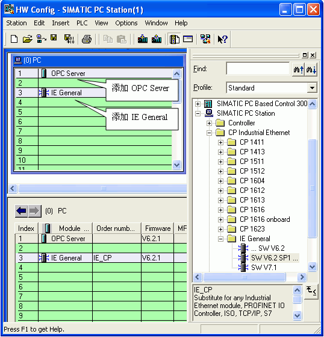
图2．PC Station的硬件组态
然后配置网卡地址并新建一个以太网,如图3所示。
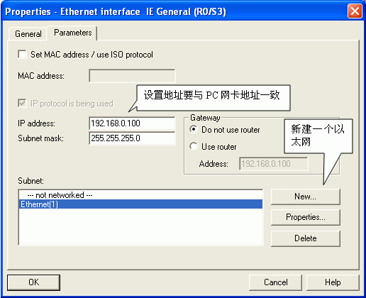
图3．设置以太网地址
完成PC站硬件组件设置后,按下编译存盘按钮,确定且存储当前组态配置。
3. 配置网络连接
通过点击工具栏右上角网络配置的图标 图：Icon network进入网络配置,然后在NetPro网络配置中,用鼠标选择OPC Server后,在连接表第一行鼠标右键插入一个新的连接或通过“Insert>New Connection”也可建立一个新连接然后定义连接属性,如图4~图5所示。
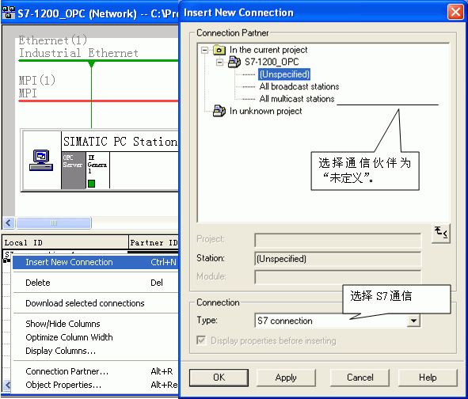
图4．建立连接及定义连接属性
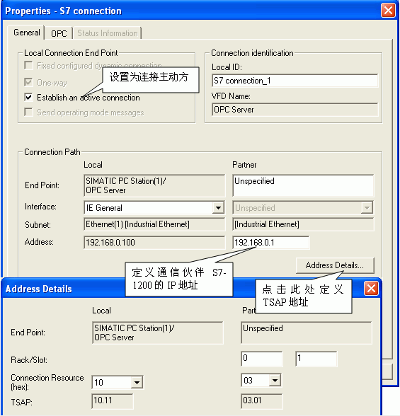
图5． 设置 S7 连接属性及TSAP地址Connection properties, TSAP
确认完成所有配置后,已建好的S7连接会显示在连接列表中。点击编译存盘按钮或选择“Network”>“Save and Compile”,如得到No error的编译结果,则正确组态完成。这里编译结果信息非常重要,如果有错误信息（error Message）,说明组态不正确,是不能下载到PC Station中的。
成功编译完成后,在STEP7中的所有PC Station的硬件组态就完成了。
通过“Station Configuration Editor”创建一个虚拟的PC Station硬件机架,以便在STEP7中组态的PC Station 下载到这个虚拟的PC Station硬件机架中去。
1. 进入PC Station硬件机架组态界面
点击右下角的图标 Icon PC Station,进入PC Station硬件机架组态界面。
2. 添加OPC Server
选择第一号插槽,点击Add按钮或鼠标右键选择添加,在添加组件窗口中选择OPC Server,如图6所示。
图6． 插入OPC Server
3. 添加组件窗口中选择IE General
选择第三号插槽,点击Add按钮或鼠标右键选择添加,在添加组件窗口中选择IE General,如图7所示。
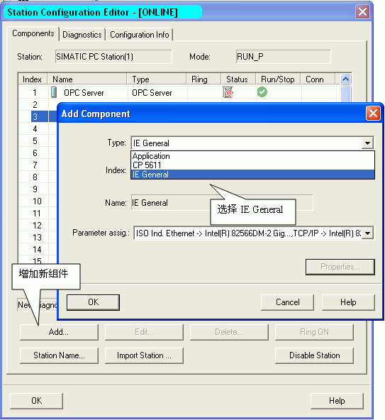
图7．插入IE General insert IE general
注意：STEP7 中的PC Station硬件组态与虚拟PC Station硬件机架的名字、组件及“Index”必须完全一致。
4. 网卡参数配置
插入IE General后,随即会弹出组件属性对话框。点击Network Properties,进行网卡参数配置,如图8所示。
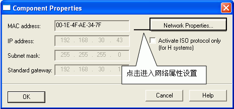
图8．进入PC 网卡参数设置
选择本地连接,通过右键菜单进入属性,如图9所示。
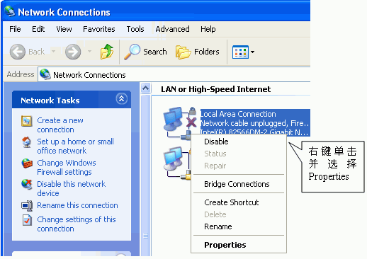
图9．选择本地连接local properties
选择TCP/IP属性,如图10所示。
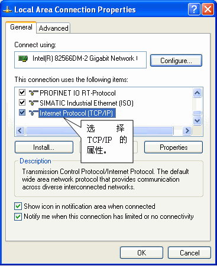
图10．进入TCP/IP 属性Internet properties
定义网卡地址,如图11所示。
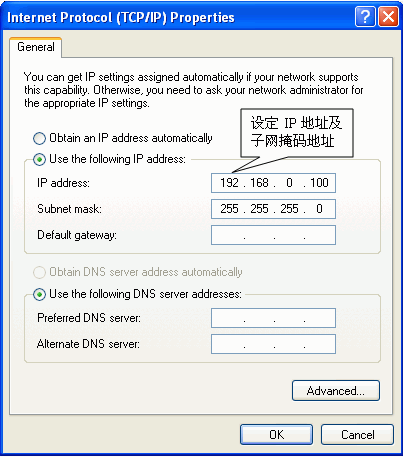
图11．置网卡地址PC IP
5. 命名PC Station
这里的“PC Station”的名字一定要与STEP 7硬件组态中的“PC Station”的名字一致,如图12所示。
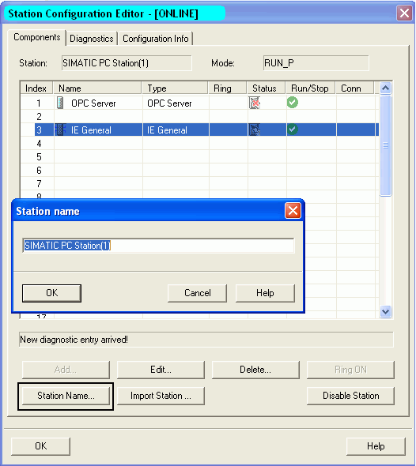
图12．命名PC STATION Station name
1. 设置PG/PC 接口
在STEP7 软件中,通过“Options”>“Set PG/PC Interface”进入设置界面,如图13所示。
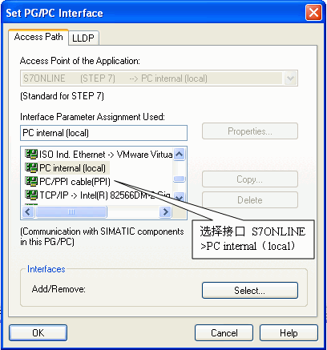
图1．设置PG/PC接口PC internal
13. 检查配置控制台
通过“start”>“Simatic”>“SIMATIC NET”>“Configuration Console”进入配置控制台检查,如图14所示。
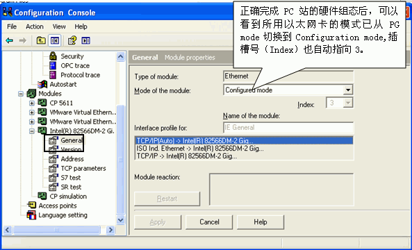
图14．配置控制台
注意：对于Simatic Net V6.1或V6.0版本的软件,需要在上面窗口中,手动将模块模式（Mode of the module）从PG模式切换到组态模式（Configured mode）,并设置Index号。然后再在Station Configuration Editor中添加硬件。
3. 在STEP7的硬件配置中下载PC Station组态。
4. 在网络配置中将配置好的连接下载到PC Station中。
下载完成后在“Station Configuration Editor”中状态显示,如图15所示。在编程过程中,可以根据这些状态显示进行判断组态是否正确。
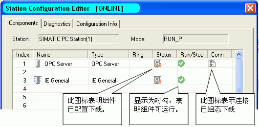
图15．下载完成后的状态Station Editor online
SIMATIC NET自带OPC Client端软件 OPC Scout,可以使用这个软件测试所组态的OPC Sever。通过点击左下角的“Start”>“Simatic”>“SIMATIC NET”>“OPC Scout”启动进行测试。
1. 新建变量组
双击OPC.SimaticNET,新建一个组并输入变量组的名称,例如S7-1200 。如图16所示。
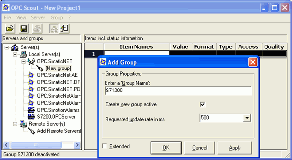
图16． 创建一个新的变量组
2. 添加变量
选择一个数据,点击“S7:”>“S7 connection_1”>“objects”>“M”>“New Definition”来添加一个变量,并为变量选择数据类型、起始地址、数据长度,并添加到右侧窗口中。如图17所示。
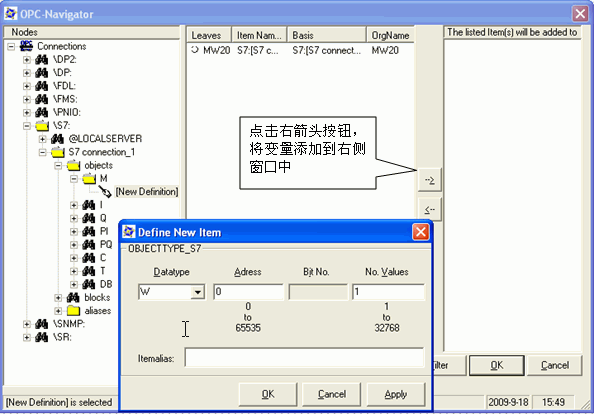
图17． 添加变量
 注意：如果访问数据为DB块,在创建DB块时不能勾选“Symbolic access only(仅符号寻址）”,单方S7通信只支持绝对寻址的DB块。
注意：如果访问数据为DB块,在创建DB块时不能勾选“Symbolic access only(仅符号寻址）”,单方S7通信只支持绝对寻址的DB块。
3. 观察通信结果及质量,如图18所示。
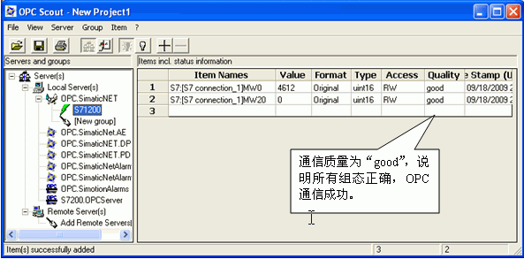
图18．检查通信结果
 注意：如果通信质量为“bad”,则说明通信失败,需要检查软件组态及硬件连接是否正确。
注意：如果通信质量为“bad”,则说明通信失败,需要检查软件组态及硬件连接是否正确。
 如何在 OPC Scout 中添加 DB 区数据变量？
如何在 OPC Scout 中添加 DB 区数据变量？
答：在 OPC Scout中添加变量时,DB 数据没有添加变量的选项,如图19所示。
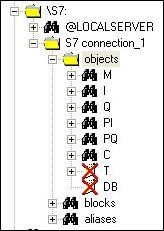
图19．无法添加 DB 数据
如果要添加数据区需要先添加 I 区或 M 区数据,然后修改成 DB 区数据,添加步骤如图20所示。
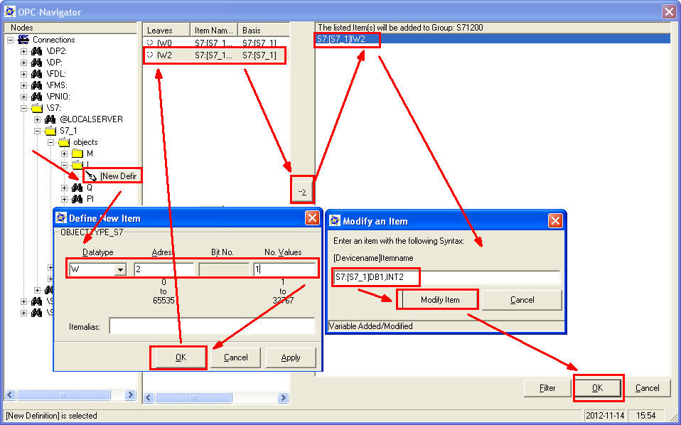
图20.在 OPC Scout中添加 DB 数据的步骤
观察 DB 通信结果及质量，如图21所示。
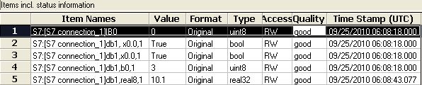
图21. 观察 DB 通信结果及质量
 如何在 OPC Scout 中添加不同数据类型的 DB?
如何在 OPC Scout 中添加不同数据类型的 DB?
答: 添加不同 DB 数据类型的表达形式如下：
BOOL ：DB1,X0.0,1
BYTE : DB1,B10,1
WORD : DB1,W20,1
DWORD: DB1,D30,1
INT : DB2,INT40,1
DINT : DB2,DINT50,1
REAL ：DB2,REAL60,1
 在 OPC Scout 中为什么可以访问到 I,Q,M 等数据,却唯独不能与 DB 通信?
在 OPC Scout 中为什么可以访问到 I,Q,M 等数据,却唯独不能与 DB 通信?
答: 在创建DB块时,缺省的属性设置为"只支持符号寻址",这就造成OPC无法访问 DB 的绝对地址,造成通信错误。为了避免通信错误,创建DB块时,一定不要勾选"只支持符号寻址"。正确的设置如图22所示。
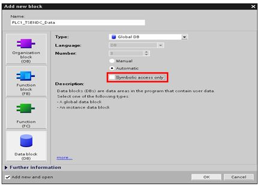
图22. 取消勾选"Symbolic access only"